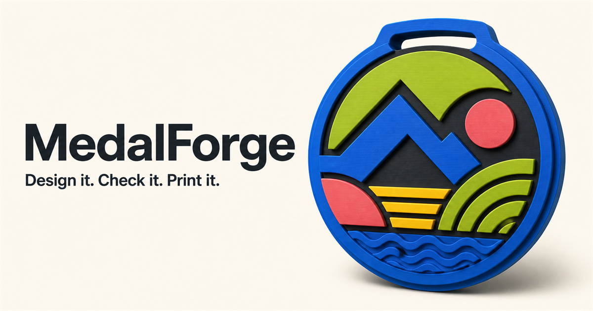

Local-first 3D customization
Choose what you want to make. Design it without CAD.
Each studio is purpose-built for one printable product, with the right parameters, print checks, colors, pricing, and exports already built in.
- No CAD experienceGuided product tools
- Runs on your deviceLow hosting cost
- Production files3MF, STL, STEP & PDF

Medal Studio · Ready Design directly in 3DClick any face, move artwork, set depth, validate, export.Focused workspaces
Start with the product—not a blank CAD screen
New studios plug into the same local geometry, material, image, pricing, and ordering foundation.
One familiar flow
From idea to printable file
The shared platform does the technical work while each studio only shows the decisions that matter for that product.
- 01Choose a studio
Start with a medal, organizer, holder, or another focused product.
- 02Customize visually
Edit dimensions, colors, text, images, and product-specific parameters.
- 03Check printability
Nozzle-aware rules catch details, walls, unsupported geometry, and material issues.
- 04Export or order
Download production files today; local-maker ordering can use the same project later.